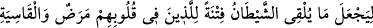
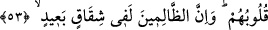

bunun Hz. Peygamber (s.a.)’in tilâveti olduğunu sandılar.”
“Ne var ki Allah,” küfür sözlerinden “şeytanın katacağı şeyi iptal eder” giderir ve
geçersiz kılar. Buradaki “
” ile ahkâmda kullanılan şer’î nesh değil, sözlük mânâsı
murâd edilmiştir.
“Sonra Allah,” peygamberlerin (aleyhimü’s-selâm) okuduğu “kendi âyetlerini” hiç
kimse onları geçersiz kılmaya yol bulamasın diye “sağlam olarak yerleştirir.” sâbit
kılar.
“Allah,” kendi vahyettiğini de şeytanın katmaya çalıştıklarını da “hakkıyla bilendir,
hüküm ve hikmet sâhibidir.” Bunu (şeytanın bu yapmaya çalıştıklarını) mümkün
kılmasında hikmet sâhibidir. Bununla îmânda sebat edenle îmânı sarsılanı birbirinden
ayırmak için dilediğini yapar. Yaptıklarında hikmet sâhibidir. Peygamberlerin okumasını
(ümniyye) bile şeytanın ilkâsıyla alâkadar kılması ve onu neshedip sonra âyetlerini
sâbit kılması da hikmetledir.
Bazıları şöyle demiştir: “Böyle bir şey câiz görülseydi bu, onlar okurken işitilenin
kendi sözleri midir, yoksa şeytanın katmaya çalıştıkları mıdır diye peygamberlerin
durumları hakkında şüpheye sebep olurdu. Bu yüzden de onlara tâbi olmak güçleşirdi.”
Bu söze şöyle cevap verilebilir: Şeytanın katmaya çalıştıklarının batıl olduğu ihlaslı
mü’minlerin yanında gayet açıktır. Görmez misin ki Kur’an putları iptal ederek
gelmiştir. O halde “İşte onlar ulu kuğulardır (garânîk), şüphesiz ki şefâatleri
umulmaktadır.” sözünün Kur’an’dan olması nasıl mümkün ve câiz olur? Böyle olduğu
kabul edilse bile bir müddet sonra da olsa Allah’ın iptal etmesi, âyetlerini sağlam
olarak yerleştirmesi ve işin hakîkatine vâkıf kılması her türlü şüpheyi ortadan kaldırır.
Böylece şeytanın katmaya çalıştığı şeyler imtihan kabilinden olur. Aşağıdaki âyette
gösterilen sebep perdeyi kaldırmakta ve tereddüd eden kimseyi doğru yola iletmektedir.
53. (Allah, şeytanın böyle yapmasına müsaade eder ki) kalplerinde hastalık
olanlar ve kalpleri katılaşanlar için, şeytanın kattığı şeyi bir deneme (vesilesi)
yapsın. Zalimler, gerçekten (haktan) oldukça uzak bir ayrılık içindedirler.
Allah, özel olarak Nebî (a.s.)’ın kırâatına/okumasına şeytanın bir şey katmasına imkân
verdi ki “kalplerinde hastalık olanlar ve kalpleri katılaşanlar için, şeytanın kattığı
şeyi bir deneme” imtihan ve ibtilâ “(vesilesi) yapsın.”
Burada Hz. Peygamber (a.s.) özel olarak zikredilmiştir. Çünkü diğer peygamberler
hakkında şeytanın ilkâda bulunmasına Allah’ın imkân vermesini burada ve aşağıda
belirtilen sebeplere bağlamak mümkün değildir. Şu halde önceki âyet âmm (genel) bu
âyetler (53 ve 54) ise hâsstır.